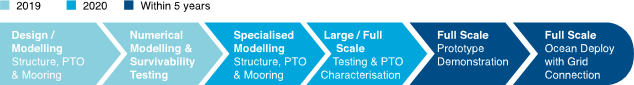
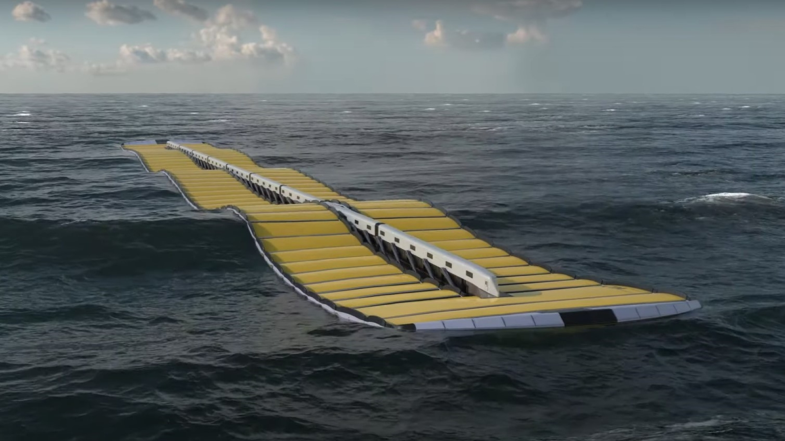

About us
Nebula Wave Energy Ltd (NWEL) is an R&D company based in Brazil that has been focused on the design and development of its wave energy converter (WEC) – The “Wave Line Magnet”, a wave energy converter that has been evolving for more than 10 years, achieving numerous patents.
The company's technology is a robust and durable WEC that can supply substantial power on demand at a low cost, with minimal maintenance, and can be deployed in any wave environment.
NWEL has been working behind the scenes but is now ready to show it to the world. The first Waveline Magnet device was conceived in 2006 and since then, various iterations have been developed for different scopes, with each new model building on the knowledge learnt from its predecessor.
